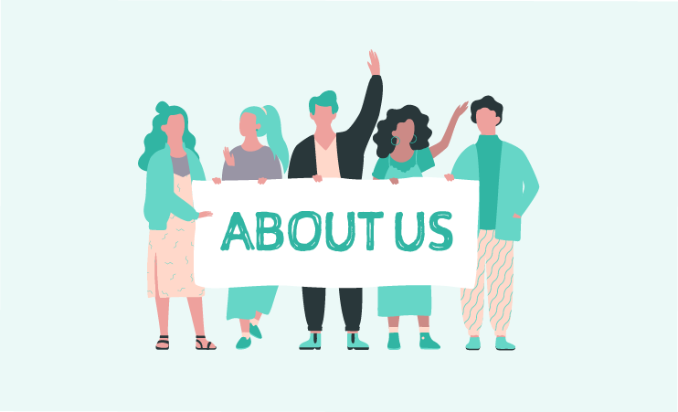

Acerca de nosotros
Somos un equipo de jóvenes estudiantes de Ingeniería en Ciencias de la Computación e Inteligencia Artificial de la Universidad Sergio Arboleda, apasionados por la tecnología y los videojuegos. Decidimos crear "Ni una risa" para ofrecerte una experiencia única en línea. ¡Esperamos que disfrutes jugando nuestro juego tanto como nosotros disfrutamos creándolo!